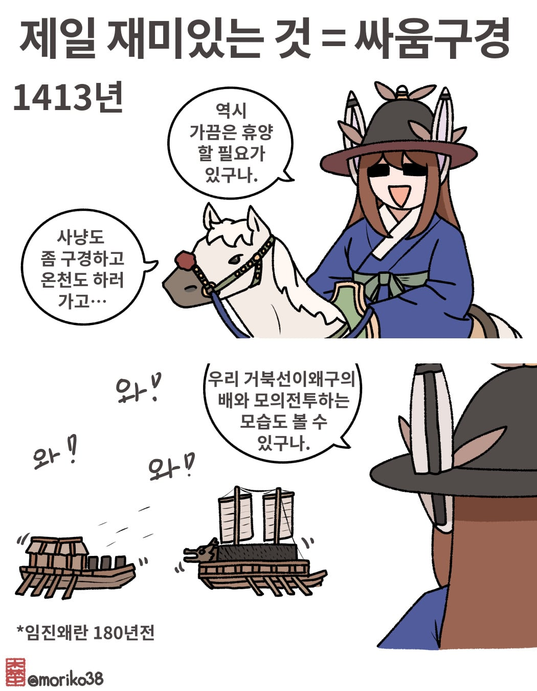
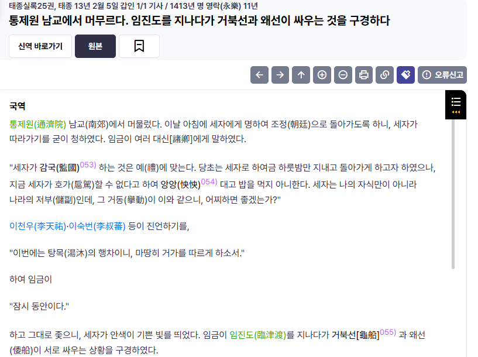

본장소가 임진강이고, 임금이 행차하다가 구경한 걸 보면 아마 모의전투였던 것으로 보입니다
조선 수군, 특히 이순신 장군은 일본 배를 나포한 기록이 적지 않게 나옴
정박 중인걸 기습하던지 해전에서 이겨서 견인해 가던지
앙앙~♥︎
15세기 초부터 거북선이 있었다고?
개념 자체는 일본 해적 때문에 나온거라 고려말 때부터 있었다고 함
다만 제식 병기로 다듬은 건 이순신 장군인거
당시 왜적의 공격방식이 대부분 배를 들이받아 건너와서 육탄전을 벌이는 방식이었다보니 '판옥선에 철판뚜껑을 덮어 못넘어오게 하자!' 라는 개념의 배는 비교적 일찍부터 구상하고 있었음. 다만 초기엔 배도 작고 비교적 단순한 형태였다면 그걸 더 크기를 키우고 강화해서 제대로 사용한게 이순신
ㅇㅇ 꽤 오래 전부터 있었음
거북선이라는 단어도 k2 전차처럼 하나의 단일 기종을 말하는게 아니라, 전차라는 병과나 차량 종류 전체를 퉁쳐서 부르는 개념에 가깝다고 하더라
그래서 생김새가 다 다른거구나
귀선 돌격선 등등 여러이름으로 불렸을거같네
앙앙~
거북선 쪼가리하나도 발견이 안되서 아쉬움
앙앙거리는 양녕...
양녕 금쪽이 기질ㅋㅋㅋㅋㅋ
앙앙대고 밥을 먹지 아니한...
임금이 행차하다 구경한거면 ufc가 아니라 wwe였나보네
태종 때 세자가 본거면 양녕이겠네
왜구애들 온거를 잡던건가 아니면 왜선구해서 연습하던건가